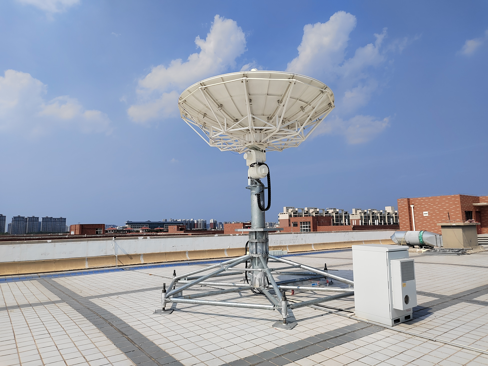

智能感知与导航制导控制

面向无人机自主飞行与协同任务，开展航路规划、智能感知和目标跟踪研究。

空天地无人系统协同控制团队成立于2017年，依托郑州航空工业管理学院开展科学研究与成果转化。团队以中青年教授、博士为主体，聚焦智能感知与导航制导控制、空天遥感测控与卫星地面站、网联无人系统终端与大数据平台三个研究方向，开展关键技术研发、系统研制与应用探索。
面向无人机自主飞行与协同任务，开展航路规划、智能感知和目标跟踪研究。

研究卫星地面站测控数传、航天器导航控制与卫星遥感应用技术。
围绕无人车定位、环境感知和规划调度，开展终端及数据平台研发。
团队演示材料所列作者：陈宇。研究涉及迁移学习与残差网络在缺陷检测中的应用。
团队演示材料所列作者：王毅。研究涉及无人机辅助无线能量传输、用户调度与轨迹优化。
论文信息依据团队演示材料整理，完整作者及出版信息待补充。
陈宇 教授
团队负责人；智能感知与导航制导控制
刘兆瑜 教授
空天遥感测控与卫星地面站
马正祥 教授
网联无人系统终端与大数据平台